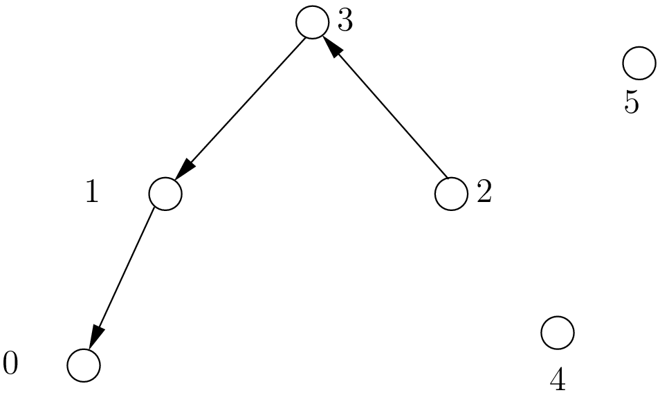
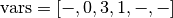
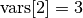
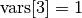
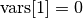
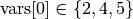
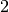
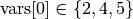
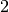

5.6. Out of the box variables and values selection primitives
To choose among the IntVar variables and the int64 values when branching, several variables and values selection primitives are available. As stated before (see the subsection The 2-steps approach in the previous section for more), the selection is done in two steps:
- First, select the variable;
- Second, select an available value for this variable.
To construct the corresponding DecisionBuilder, use one of the MakePhase() factory methods. For instance:
DecisionBuilder* MakePhase(const std::vector<IntVar*>& vars,
IntVarStrategy var_str,
IntValueStrategy val_str);
5.6.1. IntVarStrategy enums to select the next variable
The IntVarStrategy enum describes the available strategies to select the next branching variable at each node during a phase search:
- INT_VAR_DEFAULT
- The default behaviour is CHOOSE_FIRST_UNBOUND.
- INT_VAR_SIMPLE
- The simple selection is CHOOSE_FIRST_UNBOUND.
- CHOOSE_FIRST_UNBOUND
- Selects the first unbound variable. Variables are considered in the order of the vector of IntVars used to create the selector.
- CHOOSE_RANDOM
- Randomly select one of the remaining unbound variables.
- CHOOSE_MIN_SIZE_LOWEST_MIN
- Among unbound variables, selects the variable with the smallest size, i.e. the smallest number of possible values. In case of tie, the selected variables is the one with the lowest min value. In case of tie, the first one is selected, first being defined by the order in the vector of IntVars used to create the selector.
- CHOOSE_MIN_SIZE_HIGHEST_MIN
- Among unbound variables, selects the variable with the smallest size, i.e. the smallest number of possible values. In case of tie, the selected variables is the one with the highest min value. In case of tie, the first one is selected, first being defined by the order in the vector of IntVars used to create the selector.
- CHOOSE_MIN_SIZE_LOWEST_MAX
- Among unbound variables, selects the variable with the smallest size, i.e. the smallest number of possible values. In case of tie, the selected variables is the one with the lowest max value. In case of tie, the first one is selected, first being defined by the order in the vector of IntVars used to create the selector.
- CHOOSE_MIN_SIZE_HIGHEST_MAX
- Among unbound variables, selects the variable with the smallest size, i.e. the smallest number of possible values. In case of tie, the selected variables is the one with the highest max value. In case of tie, the first one is selected, first being defined by the order in the vector of IntVars used to create the selector.
- CHOOSE_LOWEST_MIN
- Among unbound variables, selects the variable with the smallest minimal value. In case of tie, the first one is selected, first being defined by the order in the vector of IntVars used to create the selector.
- CHOOSE_HIGHEST_MAX
- Among unbound variables, selects the variable with the highest maximal value. In case of tie, the first one is selected, first being defined by the order in the vector of IntVars used to create the selector.
- CHOOSE_MIN_SIZE
- Among unbound variables, selects the variable with the smallest size. In case of tie, the first one is selected, first being defined by the order in the vector of IntVars used to create the selector.
- CHOOSE_MAX_SIZE
- Among unbound variables, selects the variable with the highest size. In case of tie, the first one is selected, first being defined by the order in the vector of IntVars used to create the selector.
- CHOOSE_MAX_REGRET
- Among unbound variables, selects the variable with the biggest gap between the first and the second values of the domain.
- CHOOSE_PATH
- Selects the next unbound variable on a path, the path being defined by the variables: vars[i] corresponds to the index of the next variable following variable i.
Most of the strategies are self-explanatory except maybe for CHOOSE_PATH. This selection strategy is most convenient when you try to find simple paths (paths with no repeated vertices) in a solution and the variables correspond to nodes on the paths. When a variable i is bound (has been assigned a value), the path connects variable i to the next variable vars[i] as on the figure below:
We have

where corresponds to a variable that wasn’t assigned a value.
We have ,  and
. The next variable to be choosen will be  and
in this case . What happens if
is assigned the value ?
This strategy will pick up another unbounded variable.
and
in this case . What happens if
is assigned the value ?
This strategy will pick up another unbounded variable.
In general, the selection CHOOSE_PATH will happen as follow:
- Try to extend an existing path: look for an unbound variable, to which some other variable points.
- If no such path is found, try to find a start node of a path: look for an unbound variable, to which no other variable can point.
- If everything else fails, pick the first unbound variable.
We will encounter paths again in third part of this manual, when we’ll discuss routing.
5.6.2. IntValueStrategy enums to select the next value
The IntValueStrategy enum describes the strategies available to select the next value(s) for the already chosen variable at each node during the search:
- INT_VALUE_DEFAULT
- The default behaviour is ASSIGN_MIN_VALUE.
- INT_VALUE_SIMPLE
- The simple selection is ASSIGN_MIN_VALUE.
- ASSIGN_MIN_VALUE
- Selects the minimum available value of the selected variable.
- ASSIGN_MAX_VALUE
- Selects the maximum available value of the selected variable.
- ASSIGN_RANDOM_VALUE
- Selects randomly one of the available values of the selected variable.
- ASSIGN_CENTER_VALUE
- Selects the first available value that is the closest to the center of the domain of the selected variable. The center is defined as (min + max) / 2.
- SPLIT_LOWER_HALF
- Splits the domain in two around the center, and forces the variable to take its value in the lower half first.
- SPLIT_UPPER_HALF
- Splits the domain in two around the center, and forces the variable to take its value in the upper half first.
5.6.3. Results
Just for fun, we have developed a SolverBenchmark class to test different search strategies. Statistics are recorded thanks to the SolverBenchmarkStats class. You can find both classes in the solver_benchmark.h header.
In phases1.cc, we test different combinations of the above strategies to find the variables and the values to branch on. You can try it for yourself and see that basically no predefined strategy really outperforms any other.
The program writes a report text file with the best statistics about the search of the CP Solver to solve the n-Queens Problem given a specified size. The text files have report_n.txt as name with n the size considered.
We summarize the results when we run the program with sizes  ,
,  ,
,  and in the following table:
and in the following table:
 |
Best wall time: | Best branches: |
|---|---|---|
|
ChooseFirstUnbound - AssignMin | RandomSelector - AssignCenter |
|
ChooseFirstUnbound - AssignMin | MinSizeLowestMinSelector - AssignMin |
|
MinSizeHighestMinSelector - AssignCenter | MinSizeHighestMinSelector - AssignMin |
| MinSizeHighestMaxSelector - AssignCenter | MinSizeLowestMinSelector - AssignMin |
The most fun (and most efficient) way to use or-tools is to define your own selection strategies and search primitives. This is the subject of the next section.
Google or-tools |
User's Manual
Google search
Welcome
Tutorial examples
Current chapter
5. Defining search primitives: the n-Queens Problem
Previous section
5.5. Basic working of the solver: the phases
Next section
5.7. Customized search primitives: DecisionBuilders and Decisions